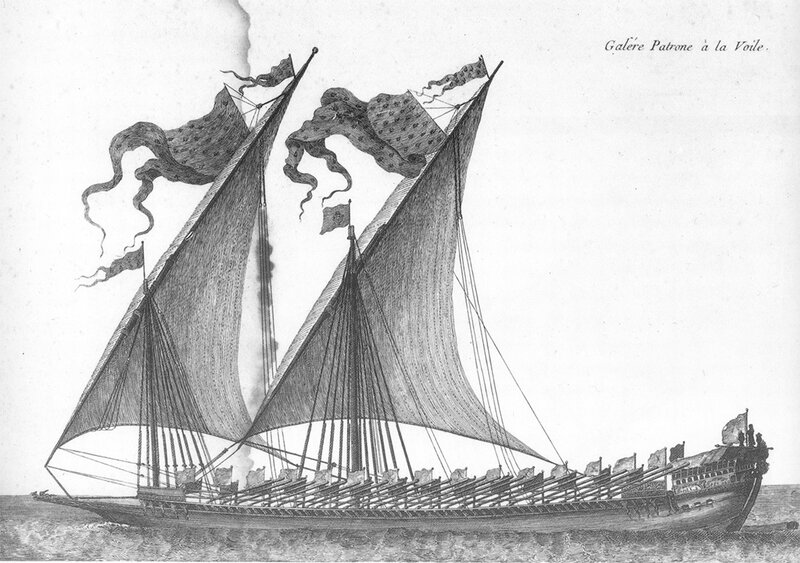

Описывая проблемы, с которыми сталкивались морские власти в эпоху Людовика XIV, невольно ловлю себя на мысли: дежавю. Подобные проблемы, почти в точности стояли и в период моей службы, и службы моих сыновей на нашем родном флоте. У. Бэмфорд, систематизировавший информацию о внутренней обстановке на галерах Людовика XIV, мог смело класть в основу своей схемы ситуацию на любом современном флоте. Неужели эти проблемы неискоренимы? Или мы не можем пока превращать эти недостатки в достоинства? Как бы то ни было, но флот по сути своей намного более консервативен, чем это может показаться.
Среди многих проявлений недисциплинированности среди офицеров галер было стремление затянуть свои отпуска. Едва ли необычная проблема в вооруженных силах, она приобрела значительный размах в Галерном корпусе Людовика. Людовик позволял своим офицерам брать отпуск в зимние месяцы, так как на это время года выходы галер не планировались. Иногда офицерам разрешалось брать отпуска до шести месяцев (хотя в конце века отпуска капитанов галер ограничивались обычно тремя месяцами, начиная с середины ноября), причем одновременно разрешалось уходить в отпуск не более, чем половине офицеров. Обычным наказанием за опоздание из отпуска был всего лишь выговор, однако иногда после неоднократных и серьезных по своим последствиям опозданий применялось отстранение от службы (иногда временное). Однако если из-за опоздания срывался выход галеры в поход вместе с флотом, надежды на снисходительность было мало.
Проблема эта, как представляется, серьезно усугубилась после смерти Кольбера в 1683 году. Уже на следующий год число отлучек без разрешения вынудило повторить ранее вышедшие приказы, запрещающие офицерам уходить в отпуск без разрешения и предусматривающие тюремное заключение на три месяца за первое нарушение и выдворение со службы за повторное. Но оказалось, что одними угрозами сурового наказания решить проблему не удается, о чем свидетельствовали записи отлучек в 1687 году, когда около 10 процентов офицеров, предназначенных к выходу в море, отсутствовали без уважительных причин. Нарушители, возможно, думали, что Сеньелэ после смерти своего отца посчитает целесообразным проявить снисходительность, когда проступок совершили так много членов известных семейств. Провинившиеся офицеры вполне вероятно давали выход своей нелюбви, если не сказать ненависти, к Кольберам и своему бунтарскому духу, показывая пренебрежение к власти Кольбера. Но поступая так, они также бросали вызов королевской власти и очень скоро им дали почувствовать, что они зашли слишком далеко. Сеньелэ, должно быть, получил удовлетворение от акции короля, разжаловавшего значительное число офицеров. Велики были усилия аристократов, чтобы избежать наказаний, предусмотренных действующими законами. Даже епископа из Бовэ вынудили вмешаться ради некоего маркиза де Веллерон (при его вторичном проступке). Конечно, французские офицеры снова и снова находили уважительные «препятствия» своевременному возвращению на базу, но действия Сеньелэ в восьмидесятые годы, как представляется, раз и навсегда подорвали, всякого рода открытые вызовы власти министра в подобных вопросах.
Другое, более болезненное проявление проблемы дисциплины, которые продолжалось, несмотря на все усилия его разрешить, было враждебное отношение между офицерами различных родов морских сил. Эта проблема становилась особенно острой, когда предпринимались попытки провести совместные операции парусных судов и галер. Офицеры каждого рода морских сил, особенно Галерного корпуса, настаивали на своем верховенстве. Долг перед королем был забыт в хаосе личных споров. Даже такой выдающийся и преданный королю офицер, как герцог де Вивонн, Генерал галер, настаивал, чтобы «офицеры галер всегда имели верховенство над офицерами (парусных) судов, имеющими равное звание и должность». Не требовалось больших усилий, чтобы увидеть огромные трудности, которые могла создать такая позиция. Все споры такого рода были решительно осуждены и признаны достойными сожаления королем и министрами; на протяжении ряда лет регулярно издавались инструкции с целью предотвращения и устранения трудностей, хотя всегда без большого успеха. Сам Людовик XIV пришел к заключению, что такие проблемы были неизбежны. Чтобы избежать самых пагубных последствий, парусные суда и галеры должны были действовать независимо, потому что «галеры и парусные суда в [совместных] операциях почти всегда несовместимы”.
Глубоко разобраться в этой проблеме невозможно. Я вспоминаю, когда по условиям конспирации нас переодевали из морской формы в сухопутную для прохождения переподготовки в одном из ядерных центров , нередкими были стычки с «законными» хозяевами этой формы, особенно в ресторанах и кафе. Государство, потратившись на сухопутную форму для моряков, сэкономило на сапогах. И вот эта маленькая деталь часто служила поводом для стычек между молодыми офицерами. Одни называли других «сапогами», а те их – «башмаками». Пустяк? Но из таких пустяков все и рождается. С какого конца яйцо разбивать – с острого или с тупого – известный повод для вражды, это еще Свифт подметил.
Учения флота, как и многие военные упражнения на парадных плацах, имели целью повышение эффективности управления и внедрение дисциплины и подчиненности. Галеры были идеальным средством для таких учебных целей. На веслах они были способны к согласованному, покорному движению в плотных порядках. Ни одно парусное судно не было на это способно. Соответственно, командиры эскадр были информированы о том, что король желает, чтобы “все галеры совершали идентичные маневры, в таком же порядке и с такой же точностью, как действуют войска Его Величества”. Даже в более ранние времена владельцы и командиры галер использовали единые приемы и движения галер. К началу девяностых годов единообразные процедуры были введены в практику. Приказ на кампанию 1692 года в мельчайших деталях предписывал, как эскадра из тридцати пяти галер должна строить свои порядки и следовать из одного порта в другой. Эскадра должна строиться в три линии, имея в первой тринадцать галер (с флагманским кораблем в центре) и по одиннадцать галер в каждой следующей линии, близко следуя способу построения войск в плотных порядках. Положение каждой галеры должно определяться старшинством ее командира. При входе в иностранный порт эскадре предписывалось построение в один ряд, используя детально прописанную «в книге» процедуру, особо предусматривавшую соблюдение верховенства старших офицеров над их младшими коллегами. Специальное маневрирование предполагалось для боевых ситуаций, иное для условий плохой погоды и так далее. Командирам галер было приказано отрабатывать на практике и совершенствовать эти процедуры с тем, чтобы они с точностью могли выполнять все маневры.

Французская галера la Patronne на параде (1701 г.) (с голл. гравюры)
Строй «плотных порядков» впечатлял и имел определенное значение для развития покорности и строгого подчинения, но его трудней было исполнять в море галерами на веслах, чем ротами или полками пехоты на плаце. Близость соседних судов в строю конечно же увеличивала вероятность столкновений, и они часто случались у французских галер.
Ответственность в случае таких столкновений почти всегда ложилась на офицеров, а не на положения уставов. Реакция в министерстве была, как правило, очень критическая, если на сказать жесткая, порой казалось, что она отражает непонимание ситуации со стороны министра или короля. Министр открыто осуждал «частые столкновения» королевских галер. В ходе кампании 1692 года, например, произошло три столкновения, очевидно значительные, так как о них было доложено и министру, и королю. Раздраженный король вынужден был заметить, что командование галер «либо халатно, либо некомпетентно», а де Ноай получил строгий выговор. На следующий год, «желая положить конец этим происшествиям, которые всегда происходят по халатности офицеров», министр издал приказ, чтобы капитаны и их подчиненные впредь несли личную и финансовую ответственность за происшествия и нанесенный ими ущерб: «Ремонт должен производиться за их счет и вычитаться из их жалованья соответственно.» В двадцатом веке командиры авианосцев и ракетных кораблей стоимостью во многие миллионы могут считать, что им повезло, что такие денежные штрафы не налагаются на них. В семнадцатом веке штрафы были, конечно, не так нелепы: капитаны галер получали основное жалованье в размере около 3000 ливров в год, а корпус судна, которым они командовали, можно было построить за сумму от 14000 до 24000 ливров. По-видимому, и министр и король были полны решимости возложить на офицеров ответственность за нанесенный ущерб, подобно тому как во времена наемников офицеры отвечали за принадлежащие им или взятые в аренду галеры.
Другие стороны проблемы, связанные с дисциплиной, возникали, когда галеры заходили в иностранные порты. От офицеров требовалось вести себя как подобает, по крайней мере не терять самоконтроля, достоинства и дисциплинированности в общественных местах. Министр считал нецелесообразным одновременный сход на берег всех капитанов галер, как это они сделали в Ливорно в 1679 году для обеда с местным губернатором. «Непоправимые происшествия могут произойти с галерами Его Величества в иностранных портах во время отсутствия командного состава», сказал министр. Возможно он имел в виду инцидент, который имел место в 1677 году, когда произошел взрыв галеры l’Heureuse в порту Чивитавеккья с большими потерями в личном составе. Офицеры в походах и в иностранных портах были, конечно, особенно склонны к проявлению своей самостоятельности. Они не уважают ни себя, ни своего короля, сказал министр, когда недостойно ведут себя по отношению к местному населению, или не выполняют религиозные обряды, или спят с женщинами на борту своих галер. Во французских портах достаточно терпимо относились к разгулу и пьянству моряков, хотя это и осуждалось инструкциями, но в иностранных портах такое поведение считалось предосудительным, так как создавало плохое впечатление о королевской службе во Франции.